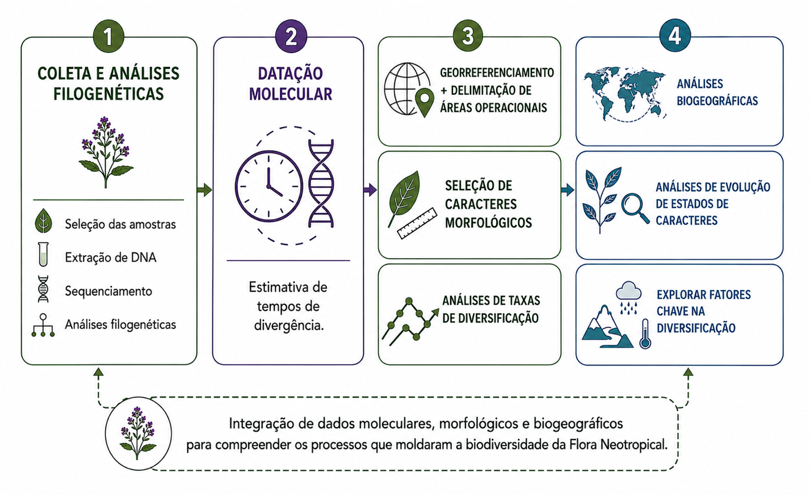

AIM
Research in our laboratory focuses on understanding the evolutionary history of Neotropical plant lineages, using Verbenaceae (Lamiales) as a primary study system. We integrate taxonomy, molecular phylogenetics, phylogenomics, and historical biogeography to investigate how plant lineages diversified across the heterogeneous landscapes of the Americas. Our work combines fieldwork, herbarium collections, and bioinformatic approaches to address fundamental questions about the origin, diversification, and classification of flowering plants, with a particular emphasis on the evolution of nuclear and chloroplast genomes and the morphological traits that define plant lineages.
LONG-TERM GOAL
Our long-term goal is to build a comprehensive evolutionary and biogeographic framework for Verbenaceae and other Neotropical plant lineages, bridging taxonomy, genomics, and conservation biology. By inferring robust phylogenetic hypotheses, reconstructing biogeographic histories, and documenting patterns of morphological evolution, we aim to understand how biotic and abiotic factors have shaped the diversification of Neotropical plant groups. Ultimately, we are committed to generating scientific knowledge that supports the biodiversity conservation and sustainable management of Neotropical flora.
RESEARCH APPROACH
Our research integrates multiple approaches to investigate plant evolution and diversification:
- Molecular phylogenetics and phylogenomics — Robust phylogenetic hypotheses are central to all research in our laboratory. We use high-throughput sequencing approaches to generate nuclear and plastid datasets and apply bioinformatic tools for their assembly and downstream evolutionary analyses. The resulting phylogenies provide the framework for our investigations of morphological evolution, historical biogeography, diversification dynamics, and taxonomic studies in Verbenaceae and other Neotropical plant groups.
- Historical biogeography — We use dated molecular phylogenies combined with ancestral area reconstruction methods to trace the geographic pathways of Verbenaceae across the Americas and between continents, addressing longstanding questions about the assembly of Neotropical flora.
- Diversification — We investigate the role of biotic and abiotic factors — including climate, habitat heterogeneity, and morphological traits — in driving the diversification of plant lineages.
- Taxonomy — We conduct taxonomic studies focused on the Verbenaceae family, combining morphological analysis of herbarium specimens with fieldwork and results from molecular phylogenetic studies. These studies produce taxonomic monographs, identification keys, and species descriptions that serve as fundamental resources for biodiversity science and conservation.

Work in our Lab has been supported by: the Universidade Federal do Rio Grande do Sul (UFRGS); Programa de Pós-graduação em Botânica da UFRGS; Conselho Nacional de Desenvolvimento Científico e Tecnológico (CNPq); Fundação de Amparo a Pesquisa do Estado do Rio Grande do Sul (FAPERGS); Coordenação de Aperfeiçoamento de Pessoal de Nível Superior (CAPES); and the Bentham-Moxon Trust (Royal Botanic Gardens, Kew).
OBJETIVO
A pesquisa em nosso laboratório tem como foco a compreensão da história evolutiva das linhagens de plantas neotropicais, utilizando Verbenaceae (Lamiales) como principal sistema de estudo. Integramos taxonomia, filogenética molecular, filogenômica e biogeografia histórica para investigar como as linhagens vegetais se diversificaram ao longo das paisagens heterogêneas das Américas. Nosso trabalho combina trabalho de campo, coleções de herbário e abordagens de bioinformática para responder a questões fundamentais sobre a origem, a diversificação e a classificação das angiospermas, com ênfase particular na evolução dos genomas nuclear e plastidial e nos caracteres morfológicos que definem as linhagens vegetais.
OBJETIVO DE LONGO PRAZO
Nosso objetivo de longo prazo é construir um arcabouço evolutivo e biogeográfico abrangente para Verbenaceae e outras linhagens de plantas neotropicais, articulando taxonomia, genômica e biologia da conservação. Ao inferir hipóteses filogenéticas robustas, reconstruir histórias biogeográficas e documentar padrões de evolução morfológica, buscamos compreender como fatores bióticos e abióticos moldaram a diversificação dos grupos de plantas neotropicais. Em última instância, estamos comprometidos em gerar conhecimento científico que subsidie a conservação da biodiversidade e o manejo sustentável da flora neotropical.
ABORDAGEM DE PESQUISA
Nossa pesquisa integra múltiplas abordagens para investigar a evolução e a diversificação das plantas:
- Filogenética molecular e filogenômica — Hipóteses filogenéticas robustas são centrais para todas as pesquisas em nosso laboratório. Utilizamos abordagens de sequenciamento de alto desempenho para gerar conjuntos de dados nucleares e plastidiais e aplicamos ferramentas de bioinformática para sua montagem e para as análises evolutivas subsequentes. As filogenias resultantes fornecem o arcabouço para nossas investigações sobre evolução morfológica, biogeografia histórica, dinâmicas de diversificação e estudos taxonômicos em Verbenaceae e outros grupos de plantas neotropicais.
- Biogeografia histórica — Utilizamos filogenias moleculares datadas, combinadas com métodos de reconstrução de áreas ancestrais, para traçar as rotas geográficas de Verbenaceae ao longo das Américas e entre continentes, abordando questões antigas sobre a formação da flora neotropical.
- Diversificação — Investigamos o papel de fatores bióticos e abióticos, incluindo clima, heterogeneidade de habitats e caracteres morfológicos, na condução da diversificação das linhagens vegetais.
- Taxonomia — Realizamos estudos taxonômicos focados na família Verbenaceae, combinando a análise morfológica de espécimes de herbário com trabalho de campo e resultados de estudos de filogenética molecular. Esses estudos resultam em monografias taxonômicas, chaves de identificação e descrições de espécies, que constituem recursos fundamentais para a ciência da biodiversidade e para a conservação.

Os trabalhos em nosso laboratório têm sido apoiados pela Universidade Federal do Rio Grande do Sul (UFRGS); pelo Programa de Pós-Graduação em Botânica da UFRGS; pelo Conselho Nacional de Desenvolvimento Científico e Tecnológico (CNPq); pela Fundação de Amparo à Pesquisa do Estado do Rio Grande do Sul (FAPERGS); pela Coordenação de Aperfeiçoamento de Pessoal de Nível Superior (CAPES); e pelo Bentham-Moxon Trust (Royal Botanic Gardens, Kew).